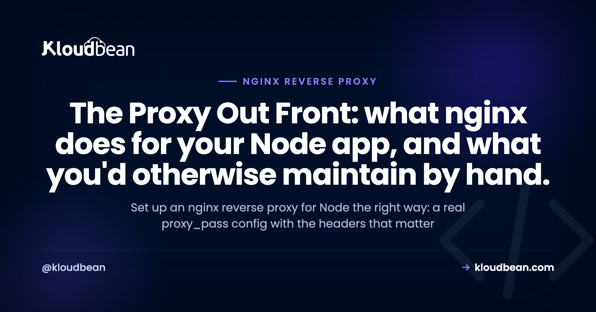

Nginx Reverse Proxy for Node: A Real, Production-Shaped Config

Your Node app boots, binds to localhost:3000, and answers every route. Then it's time to face real traffic, and pointing the public internet straight at port 3000 turns out to be a bad idea.
The fix nearly everyone reaches for is an nginx reverse proxy for Node. nginx sits on ports 80 and 443, terminates SSL, and forwards each request to your app on 127.0.0.1:3000. This guide hands you a real, copy-paste nginx config for a Node.js app, explains why every single line is there, and covers the WebSocket gotcha that 400s socket.io when you forget it. Then it shows what a managed platform does with all of this so you don't have to.
Run Node on localhost:3000 and put nginx in front on 443. nginx terminates TLS, serves your static files, and proxies everything else with proxy_pass to 127.0.0.1:3000, forwarding Host, X-Real-IP, X-Forwarded-For, and X-Forwarded-Proto so your app sees the real client. Add the Upgrade and Connection headers and WebSockets work too. On managed hosting the platform runs this proxy and the SSL for you.
Why not just expose Node on port 3000?
Node is genuinely good at running your application logic. It's less good at being the public face of a server. The core http library will happily bind a port and speak HTTP, but it was never meant to be the hardened front door to the open internet, and you feel that the moment real traffic shows up.
So you put nginx in front. Here's what nginx takes off your plate, and why each one earns its keep.
- TLS termination. nginx holds the certificate and speaks HTTPS to the world, so your Node process speaks plain HTTP on localhost and never touches a
.pemfile. One place to renew, one place to configure ciphers. - A stable public port. Browsers expect 80 and 443. Node dev servers love 3000, 3001, 5173. nginx listens on the ports the world uses and forwards to whatever port your app happens to run on, so you can restart or move the app without the public URL ever changing.
- Static files. A built React bundle, images, fonts. nginx reads those off disk far faster than waking a Node event loop to stream a file, and it frees your app to do actual work.
- Buffering slow clients. Someone on hotel wifi shouldn't be able to pin a Node worker for thirty seconds. nginx buffers the response, releases your app the moment it has the bytes, and drip-feeds the slow client itself.
- Compression. gzip or brotli at the edge, configured once, applied to every response, without a line of app code.
- Many apps on one server. A single nginx can front a dozen Node apps and domains on the same box, each on its own private port. Only one process can bind 443, so without a proxy your apps would fight over it.
None of this replaces Node. It wraps it. If the whole idea is new, we unpack it from scratch in reverse proxy explained.
The nginx reverse proxy for Node config, line by line
Enough theory. This is a complete server block you can adapt today. It fronts a Node app on 127.0.0.1:3000, redirects HTTP to HTTPS, serves static files, and handles WebSockets. Read it once, then we'll walk the parts that trip people up.
# /etc/nginx/sites-available/myapp
# nginx reverse proxy for a Node app on 127.0.0.1:3000
# runs once per request: sets Connection correctly for WebSocket upgrades
map $http_upgrade $connection_upgrade {
default upgrade;
'' close;
}
upstream node_app {
server 127.0.0.1:3000;
keepalive 32; # reuse connections to Node instead of reopening
}
# send all plain HTTP straight to HTTPS
server {
listen 80;
server_name example.com www.example.com;
return 301 https://$host$request_uri;
}
server {
listen 443 ssl http2;
server_name example.com www.example.com;
ssl_certificate /etc/letsencrypt/live/example.com/fullchain.pem;
ssl_certificate_key /etc/letsencrypt/live/example.com/privkey.pem;
client_max_body_size 25m; # allow real uploads, not just tiny forms
# let nginx serve static files straight off disk
location /public/ {
alias /var/www/myapp/public/;
expires 30d;
access_log off;
}
# everything else goes to Node
location / {
proxy_pass http://node_app;
proxy_http_version 1.1;
proxy_set_header Host $host;
proxy_set_header X-Real-IP $remote_addr;
proxy_set_header X-Forwarded-For $proxy_add_x_forwarded_for;
proxy_set_header X-Forwarded-Proto $scheme;
# the two lines that make WebSockets work
proxy_set_header Upgrade $http_upgrade;
proxy_set_header Connection $connection_upgrade;
proxy_read_timeout 60s;
}
}That's the whole thing. Now the parts worth understanding, because pasting config you don't understand is how you end up debugging at midnight.
Why each proxy header is there
The proxy_pass line does the forwarding. The proxy_set_header lines are what keep your app sane once it's behind nginx. Skip them and you get subtle bugs that only surface in production.
- Host
$host. Passes the original hostname through, so your app and its router seeexample.com, not the internal127.0.0.1. Virtual hosts, canonical URLs, and any link your app generates depend on this. - X-Real-IP and X-Forwarded-For. Without these, every request looks like it came from
127.0.0.1, because that's literally who connected to Node: nginx. These headers carry the real visitor IP so your logs, rate limiters, and geo logic actually work.X-Forwarded-Forappends the client through each hop;X-Real-IPis the single immediate client. - X-Forwarded-Proto
$scheme. Tells your app the original request washttps, even though nginx talks to it over plainhttp. Get this wrong and secure-cookie logic and any http to https redirect breaks, sometimes into an infinite loop. More on that in the errors section. - proxy_http_version 1.1 plus Upgrade and Connection. This is the WebSocket handshake. It gets its own section below, because leaving it out is the single most common mistake here.
Tell Express or NestJS to trust the proxy
Setting the headers in nginx is only half the deal. Your app has to be told to believe them. In Express, and anything built on it like NestJS, that's one line:
app.set('trust proxy', 1);
// now req.ip is the real client, and req.protocol reports 'https'With trust proxy on, req.ip reads the real client from X-Forwarded-For and req.protocol reports https. Leave it off and express-rate-limit counts every request as one IP, secure cookies quietly refuse to set, and a redirect-to-HTTPS check can loop forever. The full Express path is in deploy an Express app to production, and NestJS follows the same rule in deploy a NestJS app. Keep the values these settings depend on in real config, not as literals in code. We cover that in environment variables, done right.
Can nginx serve static files for my Node app?
Yes, and it should. Your Node app can serve /public itself with express.static. It just shouldn't in production. Every static request that reaches Node wakes the event loop to do work the operating system already does better. Hand it to nginx instead:
location /public/ {
alias /var/www/myapp/public/;
expires 30d;
add_header Cache-Control "public";
access_log off;
}Now a request for /public/app.js never touches Node. nginx reads it off disk, adds a 30-day expires header so browsers cache it, and skips the access log for that noise. Your app only sees the requests that genuinely need application code. On a busy site that's the difference between an event loop free for API calls and one clogged serving your logo.
How do I proxy WebSockets through nginx?
This is the number one thing people get wrong, so it gets its own section. Point socket.io or a raw ws server at a default nginx proxy and the connection fails, usually with an HTTP 400 or a handshake that just never upgrades. The reason: a WebSocket starts life as an ordinary HTTP request that asks to "upgrade" the connection, and nginx will not pass that Upgrade along unless you tell it to.
Two pieces make it work. First, this map block at the top of the file, outside any server block:
map $http_upgrade $connection_upgrade {
default upgrade;
'' close;
}Then, inside the location that proxies to Node, these three lines:
proxy_http_version 1.1;
proxy_set_header Upgrade $http_upgrade;
proxy_set_header Connection $connection_upgrade;proxy_http_version 1.1 matters because connection upgrades don't exist in HTTP/1.0. The map is a small, elegant trick: it sets Connection to upgrade for a WebSocket handshake and to close otherwise, so normal HTTP requests aren't affected. Add these and your real-time features connect. Miss them and everything else keeps working, which is what makes it such a maddening bug: your pages load fine and only the sockets break, so you hunt through app code when the fix was in nginx all along.
Running multiple Node apps behind one nginx
One server, several Node apps. nginx routes by hostname or by path, and honestly this is one of the best reasons to run a proxy at all. Each app keeps its own private port and its own process, and nginx is the single thing bound to 443, deciding who gets what.
By hostname, you write one server block per domain, each proxying to a different local port:
server {
listen 443 ssl;
server_name api.example.com;
location / { proxy_pass http://127.0.0.1:3000; }
}
server {
listen 443 ssl;
server_name app.example.com;
location / { proxy_pass http://127.0.0.1:4000; }
}By path, you keep one hostname and send different URL prefixes to different apps. An upstream block names each backend so the config stays readable:
upstream api { server 127.0.0.1:3000; }
upstream web { server 127.0.0.1:4000; }
server {
listen 443 ssl;
server_name example.com;
location /api/ { proxy_pass http://api; }
location / { proxy_pass http://web; }
}Same box, two apps, zero port collisions. When one of those apps grows past a single instance, that upstream idea extends to a whole pool of backends with health checks, which is what a load balancer does. We cover the distribution side in the cloud load balancer explainer.
Reload safely, and the errors you'll actually hit
Changed the config? Don't restart nginx. Test it, then reload it, so live connections aren't dropped:
sudo nginx -t # parse and test the config; changes nothing
sudo systemctl reload nginx # apply it without dropping open connectionsnginx -t catches the typo before it takes your site down. reload swaps the config in gracefully. restart drops every open connection, so save it for when you truly need it. Always run -t first. It's a two-second check that has saved more sites than any dashboard.
Three errors show up again and again. Learn to read them and you'll fix them in seconds instead of an hour.
- 502 Bad Gateway. nginx is up but can't reach Node. Almost always Node isn't running, crashed on boot, or is listening on a different port than the one in
proxy_pass. Check the process is alive and the ports match. The proxy is fine here. Your app is the one not answering. - 413 Request Entity Too Large. Someone uploaded a file bigger than
client_max_body_size, which defaults to a stingy 1 MB. Setclient_max_body_size 25m;(or whatever your uploads actually need) in the server or location block, then reload. - Redirect loop (ERR_TOO_MANY_REDIRECTS). Your app forces HTTP to HTTPS, but because
X-Forwarded-Protoisn't set or isn't trusted, the app thinks every request is still plain HTTP and redirects forever. Set the header in nginx and turn ontrust proxyin the app. Both, not one.
Two of those three are really about your app, not nginx. A 502 usually means the Node process didn't stay up, which is a process-manager job, not a proxy one. If you're weighing how to keep Node alive across crashes and reboots, see PM2 vs systemd.
Founder note. Every line above is real work, and it's work you repeat for each app and then maintain forever. Certificates renew. Ciphers get deprecated. A new app needs a new server block, a new upstream, another client_max_body_size you'll forget until the first upload 413s. Hand-rolling and hardening nginx per app is exactly the kind of toil a managed platform should absorb, so your day goes to your product instead of your proxy.
What this looks like on a managed Kloudbean server
On Kloudbean you generally don't hand-edit nginx for a normal app, because the platform already runs the reverse proxy in front of your app and terminates SSL at that layer. You deploy the app, point a domain, and the proxy forwards to your app's port for you. The config above is what the platform is doing on your behalf, and what you'd otherwise be maintaining by hand on a bare server.

SSL works the same hands-off way. You attach a domain and get a free auto-renewing certificate, so there's no .pem path to wire up and no renewal reminder sitting in your calendar. TLS terminates at the proxy, and your Node app speaks plain HTTP behind it, exactly like the config earlier.

When one backend isn't enough, the built-in Flexible Load Balancer takes that upstream idea from earlier and runs it across a pool of app instances, with SSL management and access logs. It's on every account, off until you switch it on, so you enable it the day you need it and not before. And because servers, apps, managed databases, and the load balancer all live under one dashboard, the proxy layer isn't a separate product with its own bill. New to the managed model? What is a managed server lays out exactly what the platform runs for you.
The split stays clear. The platform runs the proxy and the SSL. You own the Node app behind it, on Linux. Same division of labour as the config above, just without you editing it.
Let the platform be the proxy out front. You write the app.
Deploy your Node app on Kloudbean and a reverse proxy sits in front with free auto-renewing SSL, wired to the right port for you. Flip on the built-in load balancer the day one backend isn't enough. Start at kloudbean.com, and compare plans from $8/mo on pricing.
One dashboard · Managed reverse proxy and SSL · Built-in load balancer · Git deploy · Private networking · Free migration · Free trial
FAQ
Why put nginx in front of Node?
Because Node is built to run your application, not to be the hardened public edge of a server. nginx in front handles TLS termination, serves static files quickly, compresses responses, and buffers slow clients so they cannot tie up a Node worker. It also gives you a stable public port on 80 and 443 while Node stays private on something like 3000, and it lets one server host many apps and domains.
What does proxy_pass do in nginx?
proxy_pass tells nginx where to forward a matched request. In a Node setup you point it at your app on the loopback address, for example proxy_pass http://127.0.0.1:3000. nginx accepts the public HTTPS request, then opens its own internal connection to Node on that address and relays the response back to the client.
How do I proxy WebSockets through nginx for a Node app?
Set proxy_http_version to 1.1, then forward the Upgrade and Connection headers inside the location that proxies to Node. Use a map block that sets Connection to upgrade for WebSocket requests and to close otherwise. Without these, socket.io and raw ws connections fail with a 400 or never complete the handshake, even though normal HTTP requests keep working.
How do I get the real client IP behind nginx in Node?
Add proxy_set_header X-Real-IP and X-Forwarded-For in nginx so the visitor IP is passed through, because otherwise every request appears to come from 127.0.0.1, which is nginx itself. Then tell your app to trust those headers. In Express that is app.set('trust proxy', 1), after which req.ip returns the real client instead of the proxy.
Why do I get a 502 Bad Gateway with nginx and Node?
A 502 means nginx is running but could not reach your Node app. The usual causes are that Node is not running, crashed on startup, or is listening on a different port than the one in proxy_pass. Confirm the process is alive and that the port in your config matches the port Node actually binds. The proxy is fine, so look at the app.
Do I need nginx on managed hosting?
Usually not, because a managed platform runs the reverse proxy for you and terminates SSL at that layer. On Kloudbean you deploy the app, attach a domain, and the platform forwards traffic to your app's port with a free auto-renewing certificate. You mainly make sure your app reads its port from the environment and listens on all interfaces.
Can nginx serve static files for my Node app?
Yes, and it is faster than letting Node do it. Add a location block that maps a URL path to a folder on disk with an expires header, so requests for images, CSS, and your built JavaScript never wake the Node event loop. That frees your app to handle only the requests that need application code.
Should Node listen on localhost or 0.0.0.0 behind nginx?
On a single box where nginx runs locally, 127.0.0.1 often works, but 0.0.0.0 is safer because it also accepts health checks and probes from other interfaces. Bind to 0.0.0.0 and read the port from process.env.PORT so the same code works whether the proxy is local or on another host. There is rarely a good reason to restrict the bind address in a normal deploy.
What is client_max_body_size and why did my upload fail?
client_max_body_size is the largest request body nginx will accept, and it defaults to 1 MB. Upload a file bigger than that and nginx returns 413 Request Entity Too Large before the request ever reaches Node. Raise it in the server or location block, for example client_max_body_size 25m, then reload nginx.
How do I run multiple Node apps behind one nginx?
Give each app its own private port and process, then route to them in nginx. Use one server block per hostname for domain-based routing, or location blocks with upstream backends to split by URL path on a single hostname. nginx is the only process bound to 443, and it forwards each request to the right app.